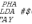

PET CRTC 6545 Test Programs
(C) 1999-2006 André Fachat
The programs in this directory are a number of test programs for the CRTC in the Commodore PET computers. Well, "test program" is probably a bit to much. In fact they demonstrate some timing issues and how the internal registers can be used to produce some effects.
The files with the ending ".a65" are the source files. They are used for my own xa65 crossassembler, but should be pretty standard anyway.
The programs have been tested with my european CBM 8296D. The ROMs set the CRTC to 59 cycles/rasterline and 339 rasterlines, which makes 20001 cycles/frame, or 50Hz frame rate. The vertical sync position changes, though, between upper/lower case mode and graphics mode. (A dump of the editor ROM - for the VICE (> 1.0) emulator for example - is found in the file edit).
The PET screens are sensitive to the timing. If they get the wrong one, it might break the screen!!! Currently there is no test done for the ROM version, the program does not check whether what it does is ok!
DO NOT RUN those programs! They are provided for educational purposes only! There is NO WARRANTY attached to those programs. You are warned.
Table of content
Vertical Retrace
Those two programs demonstrate the timing of the vertical retrace for upper/lowercase and graphics modes respectively.
The PET standard mode sets PIA1, CA1 to trigger the IRQ at the high-low transistion of the vertical drive signal. This is the inverted CRTC VSync signal. This signal thus generates the system interrupt. As there is no other way to synchronize the CPU with the CRTC, this interrupt is used. The standard mode then triggers the IRQ at the leading edge of the vertical sync signal of the CRTC.
The programs invert the top character line of the screen around the time when the CRTC reads this line for display. When the screen changes from inverted to not-inverted at least on my screen there is a very small vertical line in the scanline. This way it can be seen when the CRTC reads the inverted char and when not.
The timings, that are explained in the source files, show that the IRQ cycle is stable across the time and can reliably be computed - in relation to the first screen cycle - as:
IRQcycle = cycles/rasterline * rasterlines/char * vsync_position where cycles/rasterline = CRTCreg[0] + 1 rasterlines/char = CRTCreg[9] + 1 vsync_position = CRTCreg[7]Substract that from the total number of
cycles/frame = cycles/rasterline * (characterlines * rasterlines/char + vertical_adjust)where
characterlines = CRTCreg[4] vertical_adjust = CRTCreg[5]and you get the number of cycles the raster interrupt is triggered _before_ the first screen cycle.
Files
|  | crtc1.a65 |
| crtc2.a65 |
Uncompensated HSync
This program moves the next-to-last line two character to the right. It does this by setting the VIA interrupt to somewhere in the last rasterline of the 22nd character line. Then the position of the HSync is changed. The program then busy-loops to the last rasterline of the 23rd charline and resets the hsync value.
Unfortunately the CRT electronics does not cope very well with the changed Hsync position. The position overshoots in the first changed rasterline, goes back to far in the second, and forwards again. This happens at both changes. The characters are disturbed in the 23rd and the 22nd character line. This means that this effect is probably not very useful.
A screen shot shows the cursor in the 22nd line as well as the diagonal line of digits with the distortion.

Files
| crtc3.a65 |
Compensated HSync
Those two programs implement the side-shift by adjusting the line length of the line before the shift, such that the hsync timing does not change for the CRT:
The line before the shift is lengthened by one cycle. The first shifted line is set to standard length again, but hsync is now set one cycle earlier. The last shifted line is then shortened by one cycle to adjust for the total number of cycles, and the first again unshifted line is set to standard hsync position and length again.
This way the hsync timing shows no phase shift to the CRT electronics, thus no real disturbance.
crtc4 (see below) moves the line to the right, crtc5 to the left. Also crtc5 uses VIA T2 instead of VIA T1, but this did not help with the use of IEEE488 during the demo (crashes :-(

Files
| crtc4.a65 | |
| crtc5.a65 |
Chars per line
Those test programs demonstrate the rasterline timing with respect to the number of visible chars/line. One first remark: The memory pointer where to read the character data from is increased by the number of visible characters in each line. Thus changing the length of the charline changes the position of the first char of a line in memory.
crtc6 and crtc7 set the number of visible chars to 20 (by setting register 1 to 10), but _after_ the 20th char has been displayed. This means that in this rasterline the current column never becomes the value of register 1. Thus after the 80th column the display continues, even during the horizontal retrace. The data is taken from the next charline, as the memory pointer is still increased. crtc6 does so at the last rasterline of the 23rd charline. This has another consequence, as the memory pointer for the start of the next charline is not updated! The charline is repeated, but this time only 20 chars long.
Therefore in this picture the cursor is two characters high.

crtc7 does so at the first rasterline of the 24th charline. So only the first rasterline of the 24th charline is displayed over the horizontal retrace.
crtc8 limits the number of columns to 60, by writing 30 to register 1. This time the register is updated before the position is reached by the raster beam. However, this time it is done one rasterline early. Thus the 24th charline repeats the last 20 char of the 23rd charline, where the last rasterline is missing for the last 20 chars. The last rasterline of the 24th charline is then 80 cols long. Of those chars only the last rasterline is seen, as the next line continues where the last rasterline of the previous line ends. crtc9 then does the correct timing.
Files
| crtc6.a65 | |
| crtc7.a65 | |
| crtc8.a65 | |
| crtc9.a65 |
Character Height
Those three programs try to change the character height in the next to last character line. The first attempt sets the character height at the first rasterline of the 24th charline to the height 4. After 8 rasterlines the height is set back to 8, then it adjusts the vertical rasterline adjust to get back to the right timing. But due to this adjustment the position of the vertical sync changes. Thus the position of the IRQ in the frame changes and in the next frame the height changes to 4 between the 4th and the 8th rasterline. It is set back to 8 after the 8th rasterline. This means that the compare between the current rasterline and the register is never reached - the charline is then expanded to 32 rasterline, the maximum value. Because the compare is not reached, the next charline displays the enlarged rasterline again!
In the "normal" PET, i.e. 8032 all rasterlines above the 8th are set to blank by the hardware. In the 8296 board the RA4 line is used as an additional RAM address line. Only RA3 is used to blank the rasterline, thus rasterlines 0-7 show the normal characters, 8-15 are blank, 16-23 show the contents of some other part of the RAM, and rasterlines 24-31 of a char are blank again.

In this picture of crtc10 the RA4 line used as in the 8296 (only the memory adress during the single character line (with the middle "2") is wrong - a bug in VICE...). On a normal 8032 this single line would be blank too. What seems to be a short vertical blanked line is the cursor, that is displayed in three lines here.
crtc11 gets the interrupt one rasterline earlier, and with the 4 rasterline adjust the height change takes place before the 4th rasterline is reached. I.e. the compare is reached and the next charline then has a height of 4.
crtc12 gets the interrupt again at the first rasterline of the charline. It changes only one charline to 4 rasterline by waiting 4 rasterlines to set the height to 8 again. It does not adjust the vertical timing, though, so the total frame timing is different (4 rasterlines short). However, the interrupt timing is not changed, so this works.
Files
| crtc10.a65 | |
| crtc11.a65 | |
| crtc12.a65 |
Vertical boarders
This test one opens the vertical borders by writing a value into the vertical displayed rows register that is lower than the row counter. After the counter has passed the original value, this original value is set to the register again.

What is not seen here is the display during the vertical retrace. This retrace display can disturb the normal screen because it is overlayed over the original picture (this is not emulated in the VICE emulator that is used to capture these pictures at this time).
This effect can actually much easier be done by a POKE 59520, 6: POKE 59521, 64 :-) (If you use VICE, do a PRINT CHR$(142) before the pokes).
Files
| crtc13.a65 |
Disclaimer
All Copyrights are acknowledged. The information here is provided under the terms of the GNU Public License version 2 unless noted otherwise.
Return to Homepage